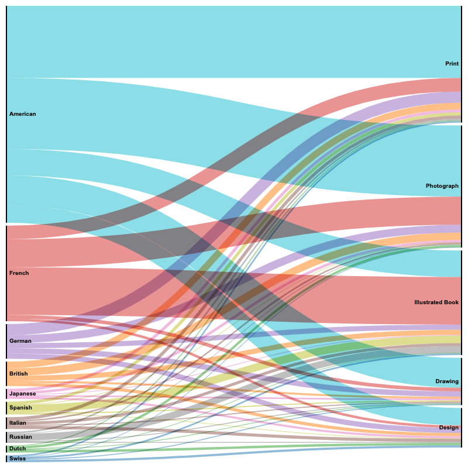

Nationality
How is nationality represented in MoMA’s collection? Are objects originating from one region more represented than others? Much like the analysis of gender, this study considers items as its metric, rather than individual creators; in other words, nationalities are not counted once per creator, but rather once per item.

The chart above shows the distribution of nationalities across departments. At a glance, the most featured nationality, United States, accounts for more works of art on its own than the next eight nationalities combined. Furthermore, many of the top ten nations are European; the first Asian country featured on the list is Japan, at number seven; Russia is number eight; Mexico is the highest-ranked south American country at number twelve; Côte d'Ivoire is the top African country on the list at number twenty-three.

This alluvial diagram shows how the top ten nationalities contribute to the top five classification categories. All nationalities are featured in those categories, albeit at different rates.
A different way of showing the contribution of every nation to the collection, or in other words, the degree to which each nation is represented in the collection, is to use a geographical representation like the one below. The color saturation reflects the amount of works of art originating from each nation the museum possesses.

Perhaps a more interesting and certainly detailed alternative to represent these data is the animated visualization below. This representation displays the geographical location of origin of acquisitions across time, the larger the circle the larger the number of acquisitions originating from a given country. We can readily identify the 1964, 1968 and 2008 spikes, the first two originating from US and Europe, and the latter being much more diverse in its composition.

In summary, the analysis of the geographical distribution of MoMA’s artist does identify some patterns that inevitably characterize the make up of the collection. These patterns see the museum acquiring works originating from the US and Europe in much larger amounts than those originating from other countries, especially during the initial decades. Many factors are at play here, naturally, nonetheless these are the trends that arise from the data. It is interesting to find, however, that all the best represented nations contribute to the top five classification categories.